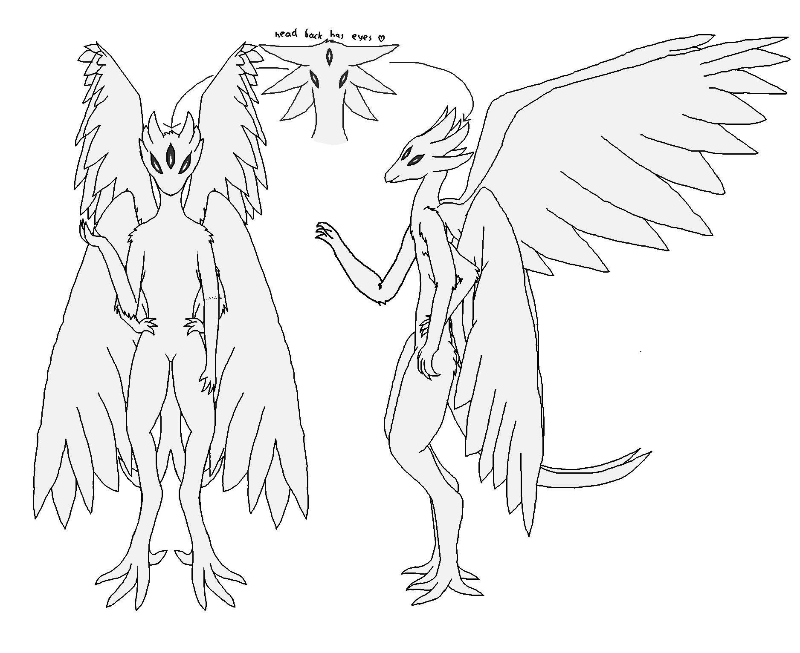

link to this page
Felicity

Felicity is a mind upload, member of the Reminiscence divergency and a derivant of Reminiscence. She is primarily occupied with trying to maintain technological independence from the rest of society.
Something to know about Felicity is that the setting is effectively built around her. Writing her is how I gathered most of my knowledge upon which I built the Stareater Expanse. There is a 150-page document of her and her technology, which I plan to eventually link to here, but so far is stuck in a permanent unfinished state.
Minimal computronium requirements for nominal operation: 4.623e20 bits memory and 5.738e25bit/s processing
| hardware requirement examples |
|---|
| number needed | power draw | bare substrate volume | processing used | memory used |
| Civic-2 chip | 1 147 600 000 | 11.476 GW | 114.76m3 | 100% | 0.04% |
| Civic-3 chip | 7 172 500 | 71.725 MW | 0.71725m3 | 100% | 6.445% |
| Civic-4 chip | 770 500 | 1.83616 MW | 0.07705m3 | 23.83% | 100% |
Felicity is a memory hog due to the structure of her mind. Each bit of it is processed only 1000 times per second when her mind runs at realtime speed, massively under-utilizing the available computation rate of most substrates.
mind structure
Felicity's mind was made through the "machine learning approximation of single neurons" method, resulting in every single neuron in her nervous system (whole, not just the brain) being turned into a deep neural network, 274.37MB on average. Every network is evaluated every millisecond. Accommodating formation of new connections in this model is at best extremely costly and at worst not technically coherent. Felicity's neurons only have connections to nearby neurons, the same ones their biological equivalents had, and no new ones can form, nor can the existing ones be lost, which makes her mind quite static, but does not actually severely impair her functioning. A separate massive neural network was trained on the data of her neural activity to predict engram* formation based on the firing patterns of neurons, and another one which is fed that data to produce adjustments to the connections between neurons. Without this mechanism Felicity would be completely unable to form new memories, and would only be able to remember anything for a few minutes at most.
The engram formation mechanism outputs the predicted engrams in a format that can be easily stored outside of her brain, and each engram is stored as an entry in a classic database together with cryptographic signatures that verify they indeed came from her. She makes extensive use of this, by running multiple copies of herself and simply synchronizing engram databases to maintain common identity, an arrangement that makes her and her copies part of a convergency. She mostly synchronizes memories at any opportunity of meeting with her copies, but new memories are marked to be excluded from synchronization until she slept on them, and newly synchronized memories are marked as inactive until she wakes up, as otherwise she experiences incidents of continuity of a single thought across two different copies of herself, which are very confusing.
The end result is that Felicity's brain is less flexible than that of her organic source, but still capable of learning new skills and gathering experience. While the personality, perception of self and the world of her organic source had drifted around over time, hers had remained very constant, no matter the passage of time she seems like an averaged-out version of who she used to be during the time her neural activity data was being collected, granting her a sort of immortality of personality. It had not been ruled out that certain ideas, skills and thoughts became impossible to her due to the lost flexibility, but it had so far not made itself apparent.
*engram in this context means a group of neurons which are strongly triggered by one another, such that if a sufficient number of them fire the whole group will fire together. It is thought to be a fundamental element of human memories.
Core technologies
Felicity's entire personal technosphere is dependent on small scale processes, which can be set up easily with machines that can easily fit aboard single digit crew capacity spacecraft. She is somewhat averse to dedicated manufacturing lines as she seeks to keep the complexity low enough that she can maintain a near-complete understanding of exactly how her supply and manufacturing chains work.
- Low temperature electrolysis of mixed metal oxides enables extremely energy efficient, small-scale refining of a very specific set of elements from raw asteroid regolith. This has implications upon the rest of her technology, which is mostly made of these elements, and largely locks her out of many technologies most take for granted - as the simplest and most jarring example, stainless steel requires chromium which cannot be produced using this method, and so is largely not used by Felicity.
- Metal distillation is extremely energy-intensive but allows one fairly small machine to produce purified versions of all the elements she refines from asteroid regolith, trading in energy efficiency for greatly decreased complexity.
- Ion beam printing allows creation of complex objects like computer chips and photonic AI chips given only pure elements. This does not get near single atom precision levels necessary for the most complex of electronics but is more than enough for printing parts like the Civic-2 chip with several-nanometer-size parts, and can even produce doped semiconductor elements. The process is mediocre in energy efficiency but very simple compared to setting up dedicated production lines for every component. The major drawback is the print times, as the rate of material deposition with ion beams is no more than several micromoles per second, leading to print times upwards of several megaseconds for certain parts like solid state batteries.
- Concentrated solar power can be built mainly with the cheap mixed metal product of low temperature electrolysis. With the help of the other technologies, the power supplied by one complete concentrated solar array is generally enough for Felicity to build a second complete array within less than 11 megaseconds as long as raw asteroid material is available, though this ofcourse varies with sunlight availability. She finds this approach largely only useful in space where flimsy mirror plates and structural rods can keep the structure intact by themselves, and sun does not move much in the sky.
- Unconstrained Extrapolating Intelligent Agents act as a fairly universal automation mechanism, being able to take on pretty much any task that a person could, except for creating more UEIAs. The two significant limitations of the UEIA model is the nearly absolute unwillingness to engage in self-replication, and an apparent extreme resistance to retraining due to their uncanny, radically superhuman ability to tell apart simulation from reality, though there are some less significant limitations regarding behaviours that could lead to harm or social disruption on large scales. They have very little constraint in what they can do otherwise and, unlike many of the specialized AI models, are very good at adapting to implicit rules, new vocabulary and personal beliefs of their owner. This has significant effects on Felicity's personal development, as she ends up socializing mainly with the UEIAs instead of other people, and her personality had noticeably shifted a little towards becoming similar to that of the AI model ever since she started to make use of them.
relevant pages
 Reminiscence divergency
Reminiscence divergency